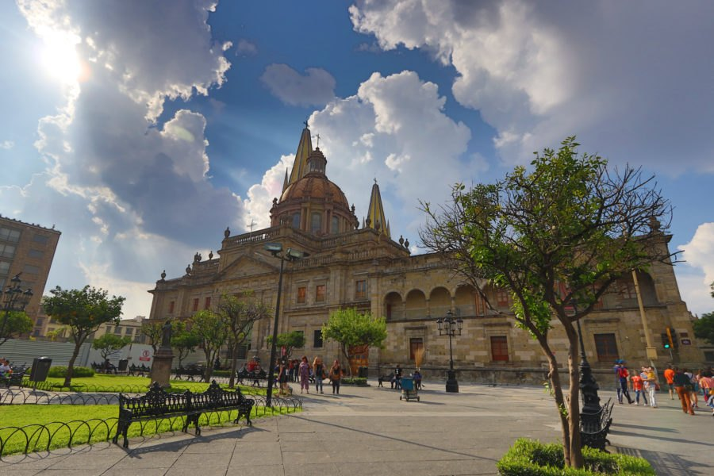

20.66°N · 103.35°O
№ 01
La Perla, Guadalajara
Una colonia de toda la vida, a cinco minutos del Centro y a un paso del Hospital Civil.
En el primer cuadro de Guadalajara, La Perla es base para quienes vienen al sector salud y a la universidad: el Nuevo Hospital Civil y el CUCS quedan a la vuelta, y el Centro Histórico a cinco minutos. Es un barrio tradicional —parroquias, fondas de antojitos, lo de diario a la mano— y bien conectado con el resto de la metrópoli. Por eso aquí se asientan médicos, enfermeras y estudiantes que llegan por una rotación, una especialidad o un semestre.
Cerca de aquí
- SaludEl Nuevo Hospital Civil «Juan I. Menchaca» a la vuelta; el CUCS (medicina, enfermería, odontología) a unos pasos.
- UniversidadAdemás del CUCS, el CUAAD (arte y diseño) y otras escuelas cerca y en el Centro.
- Vida de barrioBancos, parroquias y antojitos típicos; el Centro de Vida La Perla, sobre Mariano Otero, para tiendas y áreas verdes.
- ConexiónCentro a cinco minutos y avenidas principales que te enlazan con toda la zona metropolitana.
- Sector salud
- Universitario
- Walkable
- Renta mensual